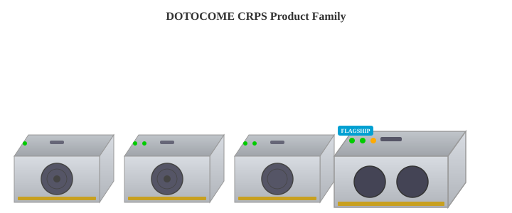
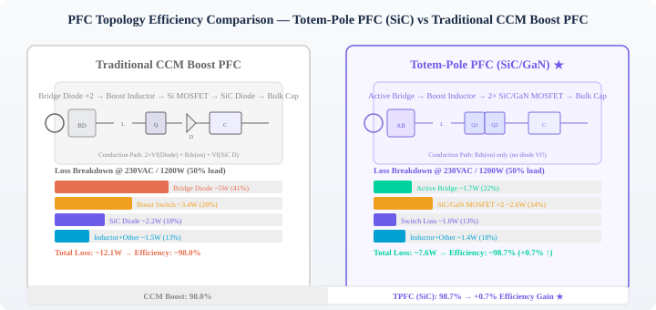
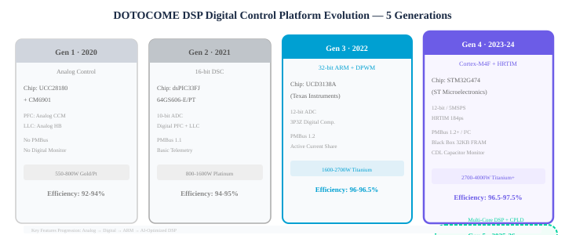
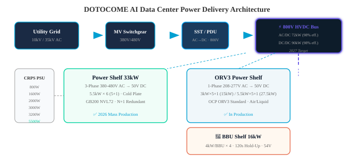

01 关于 DOTOCOMEAbout DOTOCOME
DOTOCOME
DOTOCOME Power Technology
DOTOCOME 是一家专注于AI基础设施供电解决方案的高科技企业，致力于为下一代人工智能数据中心提供高功率密度、高效率、高可靠性的CRPS（Common Redundant Power Supply）服务器电源产品。公司产品线覆盖550W至5500W全功率段，支持风冷与液冷双技术路线，积极布局800V HVDC高压直流供电架构，对标全球一线电源厂商技术标准。
产品核心优势：（1）宽禁带半导体技术——采用650V/1200V SiC MOSFET与650V GaN HEMT，实现Totem-Pole PFC与3-Phase LLC高效率拓扑；（2）全数字化控制——DSP数字控制平台（TI C2000 / STM32G4），支持PMBus 1.2+通信、Black Box故障录播、固件在线升级；（3）模块化设计——PFC/LLC/Aux独立功能模块化，快速适配185mm/265mm/54.5mm多尺寸形态；（4）智能制造——自动化SMT产线、ATE自动测试系统、MES全流程追溯。
DOTOCOME is a high-tech enterprise specializing in AI infrastructure power solutions. Our CRPS product line covers 550W-5500W, supporting both air and liquid cooling, with active development in 800V HVDC architecture. We deliver industry-leading power density (100W/in³ target), Titanium-level efficiency (97.5%), and WBG semiconductor technology (SiC+GaN) for next-generation AI data centers.
02 市场与技术趋势Market & Technology Trends
2.1 服务器电源功率密度演进 (2016-2026)2.1 Server PSU Power Density Evolution (2016-2026)
| 年份 / 指标 | Year / Metric | 2016 | 2018 | 2020 | 2021 | 2022 | 2023 | 2024 | 2025 | 2026 |
|---|---|---|---|---|---|---|---|---|---|---|
| CRPS 185mm 功率密度 | CRPS 185mm Density | 24 W/in³ | 48 W/in³ | 60 W/in³ | 66 W/in³ | 72 W/in³ | 81 W/in³ | 90 W/in³ | 96 W/in³ | 100 W/in³ |
| CRPS 265mm 功率密度 | CRPS 265mm Density | — | — | — | — | 56 W/in³ | 63 W/in³ | 72 W/in³ | 81 W/in³ | 90 W/in³ |
| 典型功率等级 | Typical Power Level | 800W | 1600W | 2000W | 2400W | 2700W | 3200W | 3600W | 4000W | 4800W |
| 峰值效率 | Peak Efficiency | 94% | 94% | 94% | 96% | 96% | 96.5% | 97% | 97.5% | 97.5%+ |
| 80 PLUS等级 | 80 PLUS Level | Platinum | Platinum | Platinum | Titanium | Titanium | Titanium | Titanium | Titanium | Titanium+ |
| 主流拓扑 (PFC) | Main Topology (PFC) | CCM Boost | CCM Boost | Interleaved Boost | TPFC | TPFC | TPFC + SiC | Interleaved TPFC | Interleaved TPFC + GaN | 3-Phase TPFC + GaN |
| 主流拓扑 (DC/DC) | Main Topology (DC/DC) | HB-LLC | HB-LLC | FB-LLC | FB-LLC | FB-LLC + SR | PSFB + SR | Interleaved LLC | Interleaved LLC | 3-Phase LLC |
| 半导体技术 | Semiconductor | Si MOSFET | Si MOSFET | Si MOSFET + SiC Diode | SiC MOSFET | SiC MOSFET | SiC + GaN | SiC + GaN | GaN HEMT | GaN + 1700V SiC |

2.2 效率标准演进2.2 Efficiency Standards Evolution
| 效率等级 / 负载 | Efficiency / Load | 10%负载 | 10% Load | 20%负载 | 20% Load | 50%负载 | 50% Load | 100%负载 | 100% Load |
|---|---|---|---|---|---|---|---|---|---|
| 80 PLUS Gold | — | 87% | 90% | 92% | |||||
| 80 PLUS Platinum | — | 90% | 92% | 94% | |||||
| 80 PLUS Titanium | 90% | 94% | 96% | 91% | |||||
| DOTOCOME Titanium+ | DOTOCOME Titanium+ | 92% | 95% | 97.5% | 93% |
2.3 关键行业趋势2.3 Key Industry Trends
AI驱动的功耗激增
AI-Driven Power Surge
NVIDIA GPU平台功耗从H100的700W（2022）→ B200的1000W（2024）→ GB300的1400W（2025）→ Rubin的1800W+（2026），单机架功率从20kW迈向100kW+。CRPS电源必须同步升级：功率密度每代提升15-20%，效率提升0.5-1个百分点。
NVIDIA GPU platform power: H100 700W (2022) → B200 1000W (2024) → GB300 1400W (2025) → Rubin 1800W+ (2026). Per-rack power grows from 20kW to 100kW+. CRPS PSUs must follow: 15-20% density increase per generation, 0.5-1pp efficiency gain.
800V HVDC 架构转型
800V HVDC Architecture Transition
传统12V母线架构在100kW级机架中损耗巨大。800V HVDC方案（AC/DC Sidecar → 800V DC Bus → DC/DC → 50V）将传输损耗降低90%，是面向2027+ Kyber平台的核心架构。DOTOCOME已布局完整800V HVDC产品线。
Traditional 12V bus architecture suffers massive losses at 100kW rack levels. 800V HVDC (AC/DC Sidecar → 800V DC Bus → DC/DC → 50V) reduces distribution losses by 90%, the core architecture for 2027+ Kyber platform. DOTOCOME has a complete 800V HVDC product line.
03 CRPS 电源产品全矩阵Complete CRPS Product Matrix
3.1 CRPS 185mm 标准系列 (12V / 54V 输出)3.1 CRPS 185mm Standard Series (12V / 54V Output)
| 型号系列 | Model Series | 功率 | Power | 功率密度 | Density | 效率 | Efficiency | 输入 | Input | 输出 | Output | PFC拓扑 | PFC Topology | DC/DC拓扑 | DC/DC Topo. | 状态 | Status |
|---|---|---|---|---|---|---|---|---|---|---|---|---|---|---|---|---|---|
| DCR-550C | 550W | 16.6 W/in³ | 80+ Platinum (94%) | 90-264V AC | 12V / 12Vsb | CCM Boost PFC | HB-LLC | ✅ 量产 | ✅ MP | ||||||||
| DCR-800C/P | 800W | 24.1 W/in³ | 80+ Platinum (94%) | 90-264V AC / 240V DC | 12V / 12Vsb | CCM Boost PFC | HB-LLC | ✅ 量产 | ✅ MP | ||||||||
| DCR-1300C2/P | 1300W | 39.2 W/in³ | 80+ Platinum (94%) | 90-264V AC / 240V DC | 12V / 12Vsb | Interleaved CCM Boost | FB-LLC + SR | ✅ 量产 | ✅ MP | ||||||||
| DCR-1600C2/P | 1600W | 48.2 W/in³ | 80+ Platinum (94%) | 90-264V AC / 240V DC | 12V / 12Vsb | Interleaved CCM Boost | FB-LLC + SR | ✅ 量产 | ✅ MP | ||||||||
| DCR-2000D2/T | 2000W | 60.3 W/in³ | 80+ Titanium (96%) | 200-277V AC / 240-400V DC | 12V / 12Vsb | Interleaved Boost PFC | FB-LLC + Bridge SR | ✅ 量产 | ✅ MP | ||||||||
| DCR-2200D2/T | 2200W | 66.3 W/in³ | 80+ Titanium (96%) | 200-277V AC / 240-400V DC | 12V / 12Vsb | TPFC (SiC) | FB-LLC + Bridge SR | ✅ 量产 | ✅ MP | ||||||||
| DCR-2700TS/T | 2700W | 81.3 W/in³ | 80+ Titanium (96.5%) | 200-277V AC / 240-400V DC | 12V / 12Vsb | TPFC (SiC) | FB-LLC + Bridge SR | ✅ 量产 | ✅ MP | ||||||||
| DCR-3200T/TW | 3200W | 96.4 W/in³ | 80+ Titanium (96.5%+) | 200-277V AC / 240-400V DC | 12V / 12Vsb | Interleaved TPFC (GaN) | Interleaved LLC (GaN) | ✅ 量产 | ✅ MP | ||||||||
| DCR-1600G/54V | 1600W | 48.2 W/in³ | 80+ Platinum (94%) | 90-264V AC | 54V / 12Vsb | Interleaved CCM Boost | FB-LLC + 54V SR | ✅ 量产 | ✅ MP | ||||||||
| DCR-2200R/54V | 2200W | 66.3 W/in³ | 80+ Titanium (96%) | 200-277V AC | 54V / 12Vsb | TPFC (SiC) | FB-LLC + 54V SR | ✅ 量产 | ✅ MP | ||||||||
| DCR-3000R/54V | 3000W | 90.4 W/in³ | 80+ Titanium (96.5%+) | 200-277V AC / 240-400V DC | 54V / 12Vsb | Interleaved TPFC (GaN) | Interleaved LLC (GaN) | 🆕 2026量产 | 🆕 2026 MP |
3.2 CRPS 265mm 长尺寸系列3.2 CRPS 265mm Extended Series
| 型号系列 | Model Series | 功率 | Power | 功率密度 | Density | 效率 | Efficiency | 输入 | Input | 输出 | Output | 冷却 | Cooling | 状态 | Status |
|---|---|---|---|---|---|---|---|---|---|---|---|---|---|---|---|
| DCR-2000L/L5 | 2000W / 2600W | 38-49 W/in³ | Platinum (94%+) | 90-264V AC | 12V / 12Vsb | 风冷 | Air | ✅ 量产 | ✅ MP | ||||||
| DCR-2700D/D5 | 2700W | 51 W/in³ | Titanium (96%) | 200-277V AC / 240-400V DC | 12V / 12Vsb | 风冷 | Air | ✅ 量产 | ✅ MP | ||||||
| DCR-3000DL | 3000W | 56.4 W/in³ | Platinum (95%+) | 90-264V AC | 12V / 12Vsb | 风冷 | Air | ✅ 量产 | ✅ MP | ||||||
| DCR-3200CL/CL5 | 3200W / 4000W | 60-75 W/in³ | Titanium (96.5%+) | 200-277V AC / 240-400V DC | 54V / 12Vsb | 液冷冷板 | Cold Plate | ✅ 量产 | ✅ MP | ||||||
| DCR-4800CL | 4800W / 5500W | 90 W/in³ | Titanium+ (97%+) | 200-277V AC / 240-400V DC | 54V / 12Vsb | 液冷冷板 | Cold Plate | 🆕 2026新品 | 🆕 New 2026 |
3.3 型号命名规则3.3 Model Number Naming Convention
DCR-XXXX-YY-ZZ 格式说明：
DCR = DOTOCOME CRPS系列
XXXX = 额定功率 (如2700=2700W, 3200=3200W)
YY = 后缀标识：C/C2/C3=标准185mm Platinum, D2/D3/D5=265mm, T/TS/TW=Titanium, G/GE=54V输出, N/N2=网通版, L/L5=长尺寸版, CL/CL5=液冷版, DL=265mm长尺寸, HD=HVDC输入, LD=LVDC输入
ZZ（可选）= 12V / 54V 输出电压标识
DCR-XXXX-YY-ZZ Format:
DCR = DOTOCOME CRPS Series
XXXX = Rated Power (e.g. 2700=2700W)
YY = Suffix: C/C2/C3=185mm Platinum, D2/D3/D5=265mm, T/TS/TW=Titanium, G/GE=54Vout, N/N2=Networking, L/L5=Long, CL/CL5=Liquid Cooled, DL=265mm, HD=HVDC input, LD=LVDC input
04 旗舰产品深度解析Flagship Products In-Depth

图：DOTOCOME CRPS产品家族 — 800W / 1600W / 2000W / 3000WFig: DOTOCOME CRPS Product Family — 800W / 1600W / 2000W / 3000W
DCR-4800CL — 5500W 超钛金液冷旗舰5500W Ultra-Titanium Liquid-Cooled Flagship
2026 NEWGaNSiCDCR-3200T/TW — 3200W 钛金级高功率密度3200W Titanium High-Density
TitaniumGaNDCR-2700TS — 2700W 高性能185mm钛金2700W Performance Titanium 185mm
TitaniumSiC05 宽禁带半导体与核心技术WBG Semiconductor & Core Technology

5.1 拓扑技术路线图5.1 Topology Technology Roadmap
| 技术阶段 | Phase | 2021-2022 | 2023 | 2024 | 2025 | 2026+ |
|---|---|---|---|---|---|---|
| PFC拓扑 | PFC Topology | CCM Boost PFC (Si MOSFET) |
Totem-Pole PFC (650V SiC, TO-LL) |
Interleaved TPFC (SiC+GaN混合) |
Interleaved TPFC (650V GaN HEMT) |
3-Phase TPFC (GaN + 1700V SiC) |
| DC/DC拓扑 | DC/DC Topology | HB-LLC / FB-LLC (Si MOSFET) |
FB-LLC + Bridge SR (SiC MOSFET) |
Interleaved LLC (GaN HEMT) |
Interleaved LLC (GaN HEMT Primary) |
3-Phase LLC (GaN + Planar Trafo) |
| PFC效率 (230V/50%) | PFC Eff. (230V/50%) | 98% | 98.7% | 98.9% | 99.1% | 99.3%+ |
| DC/DC效率 | DC/DC Eff. | 96.0% | 96.7% | 97.2% | 97.8% | 98.0%+ |
| 功率范围 | Power Range | 800-2000W | 2200-2700W | 2700-3200W | 3200-4000W | 4000-5500W |
| 功率密度 (185mm) | Density (185mm) | 48-60 W/in³ | 66-81 W/in³ | 81-90 W/in³ | 90-96 W/in³ | 96-100 W/in³ |
| 关键封装 | Key Packaging | TO-247/TO-220 Dip + Heatsink |
TO-LL (16×6×30mm) SMD + PCB Heatsink |
TO-LL + Integrated Power Module |
GaN DFN / QFN PCB Embedded |
3D Integrated Power Module |
5.2 Totem-Pole PFC 技术优势5.2 Totem-Pole PFC Technology Advantages
传统 CCM Boost PFCTraditional CCM Boost PFC
- 桥式整流二极管：2个Bridge Diode: 2 pcs
- 电感：1个Inductor: 1 pc
- 开关管：1个 (Si MOSFET)Switch: 1 pc (Si MOSFET)
- SiC二极管：1个SiC Diode: 1 pc
- 导通回路：VBD + Rds(on) × 2Turn-on Loop: VBD + Rds(on) × 2
- 关断回路：VBD + VSiC DTurn-off Loop: VBD + VSiC D
- 效率：~98% @ 230V/50%负载
- Efficiency: ~98% @ 230V/50% load
Totem-Pole PFC (SiC/GaN)Totem-Pole PFC (SiC/GaN)
- 桥式整流二极管：0个 (有源桥替代)Bridge Diode: 0 (Active Bridge)
- 电感：1个Inductor: 1 pc
- 开关管：2个 (SiC/GaN MOSFET)Switch: 2 pcs (SiC/GaN MOSFET)
- SiC二极管：0个SiC Diode: 0 pcs
- 导通回路：Rds(on) 仅 1×Turn-on Loop: Rds(on) × 1 only
- 关断回路：Rds(on) 仅 1×Turn-off Loop: Rds(on) × 1 only
- 效率：~98.7% @ 230V/50%负载 (+0.7%)
- Efficiency: ~98.7% @ 230V/50% load (+0.7%)
5.3 宽禁带半导体器件对比5.3 WBG Semiconductor Comparison
| 参数 | Parameter | Si MOSFET | SiC MOSFET | GaN HEMT | |||
|---|---|---|---|---|---|---|---|
| 耐压等级 | VDS Rating | 600-650V | 650V / 1200V / 1700V | 650V / 900V | |||
| 导通电阻 (Typ.) | RDS(on) Typ. | 125-360mΩ | 33-60mΩ (650V, TO-LL) | 25-50mΩ (650V) | |||
| 开关频率 | Switching Freq. | 65-130kHz | 100-300kHz | 200-1000kHz | |||
| 栅极驱动电压 | Gate Drive | 0-12V | -5V ~ +18V | 0-6V (敏感) | |||
| 体二极管反向恢复 | Body Diode Qrr | 高 (限制硬开关) | High (limits hard switching) | 低 | Low | 零 (HEMT无体二极管) | Zero (No body diode) |
| 封装形式 | Package | TO-247, TO-220, D2PAK | TO-247-4, TO-LL, D2PAK-7 | DFN, QFN, TO-LL, embedded | |||
| DOTOCOME应用 | DOTOCOME Application | 550W-1600W CCM Boost | 550-1600W CCM Boost | 2000W+ TPFC, FB-LLC | 2000W+ TPFC, FB-LLC | 3200W+ Interleaved TPFC, 3-Ph LLC | 3200W+ Interl. TPFC, 3-Ph LLC |
5.4 有源桥技术 (Active Bridge)5.4 Active Bridge Technology
传统桥式整流：二极管导通压降 Vf = 0.6~1.1V，在2400W/230V系统中产生约10W损耗。
有源桥（Active Bridge）：MOSFET Rds(on) × Id 替代二极管 Vf，导通损耗显著降低。在400W@230V条件下实测效率提升 0.45%。DOTOCOME 2000W以上全系列标配Active Bridge技术。
Traditional Bridge Rectifier: Diode Vf = 0.6~1.1V, ≈10W loss in 2400W/230V system.
Active Bridge: MOSFET Rds(on) × Id replaces diode Vf, significantly lower conduction loss. Measured 0.45% efficiency gain at 400W@230V. Standard on all DOTOCOME 2000W+ models.
5.5 TO-LL 封装与高功率密度设计5.5 TO-LL Package & High Density Design
TO-LL封装优势：从传统TO-247 DIP插件（散热片侧面积约32×22×30mm）升级为SMD TO-LL（16×6×30mm），功率密度从~1706 W/in³提升至~12,517 W/in³（约7倍），同时实现更优的热阻。DOTOCOME 2000W以上PFC及LLC主开关管全面采用TO-LL。
TO-LL Package Advantage: Moving from traditional TO-247 DIP (32×22×30mm heatsink area) to SMD TO-LL (16×6×30mm). Power density increases from ~1706 W/in³ to ~12,517 W/in³ (~7× improvement) with better thermal resistance. Standard on all DOTOCOME 2000W+ PFC and LLC main switches.

5.6 DSP数字控制平台5.6 DSP Digital Control Platform
| DSP世代 | DSP Generation | 主控芯片 | Main MCU | 架构 | Architecture | 分辨率 | Resolution | 应用 | Application |
|---|---|---|---|---|---|---|---|---|---|
| Gen 1 (2020) | UCC28180 + CM6901 | 模拟PFC + 模拟LLC | Analog PFC + Analog LLC | — | 550W-800W Gold/Platinum | ||||
| Gen 2 (2021) | dsPIC33FJ64G | 16位DSC | 16-bit DSC | 10-bit ADC | 800W-1600W Platinum | ||||
| Gen 3 (2022) | UCD3138A (TI) | 32位ARM + 专用DPWM | 32-bit ARM + Dedicated DPWM | 12-bit ADC | 1600W-2700W Titanium | ||||
| Gen 4 (2023-24) | STM32G474 (ST) | Cortex-M4F + HRTIM | Cortex-M4F + HRTIM | 12-bit ADC / 5MSPS | 2700W-4000W Titanium+ | ||||
| Gen 5 (2025-26) | Gen 5 (2025-26) | 多核DSP + CPLD联合Multi-core DSP + CPLD | 双核锁步 + 硬件加速 | Dual Lockstep + HW Accel | 16-bit ADC | 3200W-5500W, FW安全 |
06 Power Shelf 机架级供电方案Rack-Level Power Shelf Solutions

6.1 Power Shelf 产品对比6.1 Power Shelf Product Comparison
| 参数 | Parameter | 3U 33kW 双输入 | 3U 33kW Dual-Input | ORV3 1U 15kW | ORV3 1U 15kW | ORV3 1U 27.5kW | ORV3 1U 27.5kW |
|---|---|---|---|---|---|---|---|
| 总功率 | Total Power | 33kW (N+1) | 15kW (N+1) | 27.5kW (N+1) | |||
| PSU配置 | PSU Config | 5.5kW × 6 (5+1) | 3kW × 5 (5+1) | 5.5kW × 5 (5+1) | |||
| 输入 | Input | 3-Phase 380-480V AC / 240V DC 双输入 + ATS | 1-Phase 208-277V AC 单输入 | 1-Phase 208-277V AC 单输入 | |||
| 输出 | Output | 50V DC Bus Bar | 50V DC Bus Bar | 50V DC Bus Bar | |||
| PSU效率 | PSU Efficiency | 97.5% (Titanium+) | 97.5% (Titanium+) | 97.5% (Titanium+) | |||
| 冷却 | Cooling | 液冷冷板 (Cold Plate) | Cold Plate Liquid | 风冷 | Air | 风冷 | Air |
| 尺寸 (H×W×L) | Dimensions | 130 × 538 × 798mm (21") | 40 × 533 × 720mm (21") | 40 × 533 × 762mm | |||
| PSU尺寸 | PSU Form Factor | 40 × 68 × 600mm | 40 × 73.5 × 520mm | 40 × 73.5 × 640mm | |||
| BBU支持 | BBU Support | ✅ 16kW BBU Shelf | ✅ 16kW BBU Shelf | ✅ 可选 | ✅ Optional | ✅ 可选 | ✅ Optional |
| ATS | ATS | ✅ 内置ATS自动切换 | ✅ Built-in ATS | ❌ | ❌ | ❌ | ❌ |
| RMU管理单元 | RMU | ✅ Ethernet / Serial | ✅ Ethernet / Serial | ✅ Ethernet | ✅ Ethernet | ✅ Ethernet | ✅ Ethernet |
| 目标平台 | Target | NVIDIA GB200 NVL72 | 通用GPU集群 | General GPU Cluster | 高密AI训练 | High-Density AI Training |
6.2 800V HVDC 架构6.2 800V HVDC Architecture
AC/DC Sidecar → 800V DC Bus → DC/DC → 50V DC 机架母线AC/DC Sidecar → 800V DC Bus → DC/DC → 50V DC Rack Bus
传统12V/48V母线架构在100kW+机架中存在严重的I²R损耗。800V HVDC架构将AC-DC整流置于机架侧旁（Sidecar），以800V高压直流传输至各PSU，再经DC/DC模块降压至50V供GPU使用。该架构将传输电流降低至原来的1/16，线缆损耗降低约90%，并支持更远的传输距离。
Traditional 12V/48V busbar suffers severe I²R loss at 100kW+ rack. 800V HVDC places AC-DC rectification in a Sidecar, transmits at 800V DC to each PSU, then DC/DC steps down to 50V for GPU. Current reduces to 1/16 of original, cable loss drops ~90%, and supports longer transmission distance.
| 参数 | Parameter | AC/DC Sidecar | AC/DC Sidecar | DC/DC模块 | DC/DC Module |
|---|---|---|---|---|---|
| 功率 | Power | 72kW (3-Phase 480V AC) | 90kW Single Module | ||
| 效率 | Efficiency | 98% (Titanium+) | 98% (Titanium+) | ||
| 输出电压 | Output Voltage | 800V DC | 50V DC | ||
| 半导体 | Semiconductors | 1700V SiC MOSFET | 650V GaN HEMT + 1200V SiC | ||
| 目标时间 | Target Timeline | 2027量产 (配合NVIDIA Kyber平台) | |||
6.3 BBU (Battery Backup Unit) 蓄电池备份6.3 BBU (Battery Backup Unit)
| 参数 | Parameter | BBU模块 | BBU Module | BBU Shelf | BBU Shelf |
|---|---|---|---|---|---|
| 功率 | Power | 4kW (max) | 16kW (4 × 4kW BBU) | ||
| 输出电压 | Output Voltage | 54V DC (可选12V) | 54V DC Bus | ||
| 保持时间 | Hold-up Time | 120秒 @ 4kW | 120秒 @ 16kW | ||
| 充电功率 | Charging Power | 可调节 | Adjustable | BCU统一管理 | BCU Managed |
| 均流 | Current Sharing | 主动均流 | Active | Shelf级均流 | Shelf-level |
| 隔离 | Isolation | ORing FET隔离 | ORing FET | — | |
| 热插拔 | Hot-Swap | ✅ 支持 | ✅ Supported | — | |
| 安全认证 | Safety | UL60950-1, IEC60950-1, UL1973, IEC62619 | — | ||
| Shelf并联 | Shelf Parallel | — | 最多3个Shelf并联 | Up to 3 Shelves |
07 固件安全与智能特性FW Security & Intelligent Features
7.1 Black Box 故障录播7.1 Black Box Fault Recording
DOTOCOME Black Box功能：内置32KB FRAM高速存储，在故障发生时以20KS/s采样率（每传感器）实时记录关键参数70ms窗口数据。支持15条故障记录扩展，每条记录包含：输入电压/电流、输出电压/电流、温度（PFC MOS、LLC MOS、SR MOS、环境）、PFC开关频率、风扇转速、保护触发类型（OCP/OVP/OTP/SCP）。所有数据通过PMBus 1.2+接口可读取，用于RMA分析和可靠性提升。
DOTOCOME Black Box: Built-in 32KB FRAM high-speed storage. Records 70ms real-time data window at 20KS/s (per sensor) during fault events. Supports up to 15 fault records, each containing: Vin/Iin, Vout/Iout, temperatures (PFC MOS, LLC MOS, SR MOS, ambient), PFC switching frequency, fan speed, protection trigger type (OCP/OVP/OTP/SCP). All data readable via PMBus 1.2+ for RMA analysis.
7.2 固件安全架构7.2 Firmware Security Architecture
| 安全特性 | Security Feature | 实现方式 | Implementation |
|---|---|---|---|
| 固件加密 | FW Encryption | AES-128加密固件镜像，防止逆向工程 | |
| 安全启动 | Secure Boot | 数字签名验证，拒绝非授权固件加载 | |
| 在线升级 | Live FW Upgrade | 增强型Bootloader，支持不停机固件升级，双Bank切换 | |
| 回滚保护 | Rollback Protection | 固件版本防降级，防止已知漏洞利用 | |
| 安全通信 | Secure Communication | PMBus 1.3 支持数据包加密和完整性校验 |
7.3 智能监测与管理7.3 Intelligent Monitoring & Management
| 功能 | Function | 技术参数 | Specifications |
|---|---|---|---|
| PMBus 通信 | PMBus Communication | PMBus 1.2+ / SMBus / I²C / CAN, 支持多PSU并联通信 | |
| 数字均流 | Digital Current Sharing | 均流精度 < 5% @ >20% 额定负载（单线均流总线） | Accuracy < 5% @ >20% rated load |
| Black Box | Black Box | 15条故障记录 / 32KB FRAM / 20KS/s采样 / 70ms窗口 | 15 records / 32KB FRAM / 20KS/s / 70ms |
| POH 寿命监控 | POH Life Monitoring | 电解电容寿命预测 / 风扇POH累计 / MTBF实时计算 | |
| LED指示 | LED Indicator | Flex PCB LED：1×绿(正常) / 1×橙(预警) / 1×红(故障) | |
| PSKILL/ImON/VinOK | PSKILL/ImON/VinOK | 硬件保护信号：PSKILL(强制关机), ImON(电流监测), VinOK(输入OK) | |
| OTA固件升级 | OTA FW Update | 通过BMC/OpenBMC远程升级，支持批量部署 |
08 行业内竞争格局与技术对标Industry Competitive Landscape & Technical Benchmarking
| 对标维度 | Dimension | DOTOCOME | Delta | Lite-On | AcBel | Great Wall | Murata | Aohai | ||||||
|---|---|---|---|---|---|---|---|---|---|---|---|---|---|---|
| 最高功率 (CRPS 185mm) | Max Power (CRPS 185mm) | 3200W | 3200W | 3000W | 2700W | 3200W | 2700W | 2000W | ||||||
| 最高功率密度 | Max Power Density | 100 W/in³ | 100.3 W/in³ | 81 W/in³ | 96.4 W/in³ | 90 W/in³ | 78 W/in³ | 60 W/in³ | ||||||
| 最高效率 | Max Efficiency | 97.5%+ | 96.5% | 97.5% | 96% | 97.5%+ | 97% (12V) 98% (48V) | 96% | ||||||
| 80 PLUS Titanium型号数 | Titanium Model Count | 8+ | 10+ | 8+ | 5+ | 6+ | 16+ (行业最多) | 2+ | ||||||
| 54V输出支持 | 54V Output | ✅ 全系列 | ✅ | ✅ | ✅ | ✅ | ✅ | — | ||||||
| 液冷方案 | Liquid Cooling | ✅ Cold Plate | ✅ Immersion | ✅ Cold Plate | — | ✅ Cold Plate | — | — | ||||||
| Power Shelf | Power Shelf | 33kW / 3U 27.5kW / 1U | 12V/48V/54V Shelves | 33kW / 3U 27.5kW / 1U | — | 1U/2U Fan/Liquid | 18kW / 1U 15kW / 2U | PDB 1+1 2U |
||||||
| 800V HVDC | 800V HVDC | ✅ 2027 | — | — | — | — | — | — | ||||||
| BBU | BBU | ✅ 4kW / 16kW | — | — | — | ✅ | ✅ 4kW / 16kW | — | ||||||
| Black Box / FW安全 | Black Box / FW Security | ✅ AES-128 32KB FRAM | — | — | ✅ | ✅ AES-128 32KB FRAM | — | ✅ 15条记录 | ||||||
| 全球市场份额 (估算) | Global Market Share (Est.) | 新兴力量Emerging | ~65% | ~18% | ~5% | ~8% (中国) | ~2% | ~5% (中国) | ||||||
| 全球技术支持 | Global Support | 中国 + 扩展中CN + Expanding | 全球 | Global | 全球 | Global | 全球 | Global | 中国 | CN | 美/加/港/日/中 | US/CA/HK/JP/CN | 中国 | CN |
DOTOCOME 核心竞争优势DOTOCOME Core Competitive Advantages
1. 全功率段覆盖：从550W到5500W的完整CRPS产品家族，同时覆盖12V和54V输出标准
2. 双宽禁带平台：SiC + GaN混合使用，匹配不同功率段的最优成本-效率组合
3. 800V HVDC前瞻布局：面向2027 Kyber平台的高压直流架构，为行业领先布局
4. 完整的机架级方案：Power Shelf + BBU Shelf + RMU + ATS 全套供电系统
5. FW安全与智能运维：AES-128加密、Black Box、OTA升级、POH寿命监控
6. 模块化快速响应：PFC/LLC/Aux独立模块化设计，快速适配客户定制需求
1. Full Power Coverage: Complete CRPS family from 550W to 5500W, covering both 12V and 54V output
2. Dual WBG Platform: SiC + GaN hybrid, optimized cost-efficiency for each power segment
3. 800V HVDC Forward-Looking: High-voltage DC architecture ready for 2027 Kyber platform
4. Complete Rack Solution: Power Shelf + BBU Shelf + RMU + ATS full power system
5. FW Security & Smart Ops: AES-128 encryption, Black Box, OTA upgrade, POH monitoring
6. Modular Rapid Response: Independent PFC/LLC/Aux modules for quick customization
09 质量体系与智能制造Quality System & Smart Manufacturing
9.1 认证体系9.1 Certification System
| 认证类别 | Category | 认证/标准 | Certification / Standard |
|---|---|---|---|
| 质量管理 | Quality | ISO 9001:2015, IATF 16949:2016, ISO 14001:2015, ISO 45001:2018, IECQ QC080000 | |
| 产品安全 | Product Safety | CCC, CE, TUV, CB, UL & cUL, Intertek, UL WTDP | |
| 环境/可靠性 | Environmental/Reliability | HALT, HASA, ESS, ORT, IPC-9592B, RoHS 2.0, REACH | |
| EMC | EMC | EN55032 Class A / Class B, CISPR 32, FCC Part 15 | |
| 效率标准 | Efficiency | 80 PLUS (Platinum / Titanium), ErP Lot 9 (EU 2023), CQC | |
| 行业规范 | Industry Standards | CRPS v2.2, OCP ORV3, Intel ATX 3.1, PCIe 5.1, PMBus 1.2+ |
9.2 可靠性测试能力9.2 Reliability Testing Capability
| 测试项目 | Test Item | 条件/标准 | Condition / Standard |
|---|---|---|---|
| 高温老化 (Burn-in) | Burn-in | 55°C环境, 100%负载, 持续运行老化 | 55°C ambient, 100% load, continuous |
| HALT 高加速寿命 | HALT | -100°C ~ +200°C, 6自由度振动, 快速温变60°C/min | -100°C ~ +200°C, 6-DOF vibration, 60°C/min ramp |
| HASA 高加速应力筛选 | HASA | 量产100%筛选, 温度循环 + 随机振动 | 100% production screening, thermal cycle + vibration |
| MTBF 预计 | MTBF Prediction | ≥ 250,000小时 @ 55°C, 100%负载 (Telcordia SR-332) | ≥ 250k hrs @ 55°C, 100% load |
| 电解电容寿命 | Capacitor Life | ≥ 5年 @ 55°C, 100%负载 (日系长寿命电容) | ≥ 5 years @ 55°C, 100% load |
| 浪涌抗扰度 | Surge Immunity | CM: ±6KV, DM: ±6KV (IEC 61000-4-5) | CM: ±6KV, DM: ±6KV (IEC 61000-4-5) |
| ESD 静电防护 | ESD | ±8KV 接触 / ±15KV 空气 (IEC 61000-4-2) | ±8KV contact / ±15KV air (IEC 61000-4-2) |
| 工作海拔 | Operating Altitude | -60m ~ 5000m (满足数据中心全场景) | -60m ~ 5000m |
| 工作湿度 | Operating Humidity | 5% ~ 95% RH (非冷凝) | 5% ~ 95% RH (non-condensing) |
9.3 智能制造与品质管控9.3 Smart Manufacturing & Quality Control
DOTOCOME 制造质量体系：
• 自动化SMT产线：100% SMT贴片能力，支持TO-LL等新型封装
• ATE自动测试站：覆盖输入输出特性、效率曲线、保护功能、动态响应、纹波噪声全参数
• MES全流程追溯：每个PSU从SMT到出货的完整制造数据链路，支持SN级追溯
• DFX设计体系：DFMEA (设计失效模式分析) + FMEA + QCP (质量控制计划) + MSA (测量系统分析)
• SPC过程控制：关键工序CPK实时监控，PFC/LLC谐振参数在线自动调校
• ORT持续可靠性：每批次抽样进行高温加速老化、温循、振动等长周期可靠性验证
DOTOCOME Manufacturing Quality:
• 100% automated SMT line, supporting TO-LL and advanced packaging
• Full-parameter ATE auto-test (I/O, efficiency curve, protection, transient, ripple/noise)
• MES end-to-end traceability from SMT to delivery, per-SN data chain
• DFX design system: DFMEA + FMEA + QCP + MSA
• SPC process control with real-time CPK monitoring, auto PFC/LLC resonance tuning
• ORT per-lot sampling: burn-in, thermal cycling, vibration long-duration reliability validation
10 应用场景与GPU平台兼容性Application Scenarios & GPU Platform Compatibility

10.1 NVIDIA GPU平台供电推荐10.1 NVIDIA GPU Platform Power Recommendations
| GPU平台 | GPU Platform | 代际 | Generation | GPU功耗(TDP) | GPU TDP | 推荐PSU | Recommended PSU | 推荐Shelf | Recommended Shelf |
|---|---|---|---|---|---|---|---|---|---|
| H100 / H800 | Hopper (2022) | 700W | DCR-3000DL / DCR-2700TS | ORV3 15kW | |||||
| H200 | Hopper (2023) | 700W | DCR-3200T / DCR-3000DL | ORV3 15kW | |||||
| B200 | Blackwell (2024) | 1000W | DCR-3200T/TW / DCR-3200CL | ORV3 27.5kW | |||||
| GB200 NVL72 | Blackwell (2024) | 1200W (per GPU) | DCR-4800CL / DCR-3200CL ×2 | 3U 33kW (冷板液冷) | |||||
| GB300 (Ultra) | Blackwell Ultra (2025) | 1400W | DCR-4800CL | 3U 33kW + 800V HVDC | |||||
| Rubin | Rubin (2026) | 1800W+ | DCR-4800CL / Next-Gen 5500W | 800V HVDC + DC/DC | |||||
| Kyber | Kyber (2027) | TBD (>2000W) | Next-Gen 6000W+ | 800V HVDC + DC/DC |
10.2 应用场景矩阵10.2 Application Scenario Matrix
| 应用场景 | Scenario | 典型功率需求 | Typical Power | 推荐方案 | Recommended Solution |
|---|---|---|---|---|---|
| 通用机架服务器 | General Rack Server | 550W - 1300W | DCR-550C / DCR-800P / DCR-1300C2 | ||
| 高密度计算 / 存储 | HPC / Storage | 1300W - 2200W | DCR-1600C2 / DCR-2000D2 / DCR-2200D2 | ||
| GPU推理 (4-8卡) | GPU Inference (4-8 GPU) | 2200W - 3200W | DCR-2700TS / DCR-3200T | ||
| GPU训练 (8卡+) | GPU Training (8+ GPU) | 3200W - 5500W | DCR-3200CL / DCR-4800CL / Power Shelf | ||
| 超大规模AI集群 | Hyperscale AI Cluster | 33kW+ / Rack | 3U 33kW Power Shelf + BBU + 800V HVDC | ||
| 电信/边缘计算 | Telecom / Edge | 550W - 1300W (-48V DC) | DCR-800LD / DCR-1300LD (LVDC输入) | ||
| 网络交换机 | Networking Switch | 550W - 2000W | DCR-550N / DCR-800N2 / DCR-1300N2 | ||
| PoE 供电 | PoE Power | 150W - 915W | 54V PoE PSU系列 |
11 快速选型指南Quick Selection Guide
| 需求场景 | Requirement | 推荐型号 | Recommended Model | 功率 | Power | 尺寸 | Form | 备注 | Notes |
|---|---|---|---|---|---|---|---|---|---|
| 入门级, 最低成本 | Entry, Lowest Cost | DCR-550C | 550W | 185mm | 12V, Platinum, 风冷 | ||||
| 标准机架, 性价比 | Standard, Best Value | DCR-1300C2 | 1300W | 185mm | 12V, Platinum, 风冷 | ||||
| 高性能计算, 钛金效率 | HPC, Titanium Eff. | DCR-2200D2 | 2200W | 185mm | 12V, Titanium, 风冷 | ||||
| GPU 4卡, 最高性价比 | 4-GPU, Best Value | DCR-2700TS | 2700W | 185mm | 12V, Titanium, SiC, 风冷 | ||||
| GPU 8卡, 高功率密度 | 8-GPU, High Density | DCR-3200T/TW | 3200W | 265mm | 12V/54V, Titanium, GaN | ||||
| AI训练集群, 液冷 | AI Training, Liquid | DCR-3200CL / DCR-4800CL | 3200-4800W | 265mm | 54V, Titanium+, 冷板液冷 | ||||
| NVL72 机架, Shelf方案 | NVL72 Rack, Shelf Solution | 3U 33kW Power Shelf | 33kW | 3U/21" | 5+1, 液冷, ATS, BBU可选 | ||||
| 54V OCP/ORV3机架 | 54V OCP/ORV3 Rack | ORV3 27.5kW | 27.5kW | 1U/21" | 5+1, Titanium+, 风冷 | ||||
| 电信LVDC | Telecom LVDC | DCR-1300LD | 1300W | 185mm | -48V DC输入, 12V输出 | ||||
| 网络交换机 | Network Switch | DCR-800N2 | 800W | 185mm | Class B EMI, NEBS可选 |
12 联系我们Contact Us
DOTOCOME Power Technology
专注于AI基础设施供电解决方案
📧 商务合作：dotocome@163.com
🌐 官方网站：dotocome.js.org
🌐 GitHub Pages：cometod.github.io/dotocome
我们提供：
• CRPS电源样品申请与技术评估
• Power Shelf定制方案设计
• 液冷/风冷方案联合验证
• PMBus通信协议对接支持
• 批量订单与长期供应协议
DOTOCOME Power Technology
AI Infrastructure Power Solutions
📧 Business: dotocome@163.com
🌐 Website: dotocome.js.org
🌐 GitHub Pages: cometod.github.io/dotocome
We provide:
• CRPS PSU sample requests & technical evaluation
• Power Shelf custom solution design
• Liquid/air cooling joint validation
• PMBus communication protocol integration support
• Volume orders & long-term supply agreements